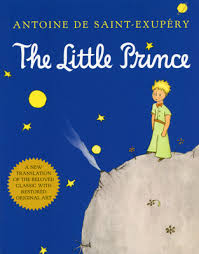
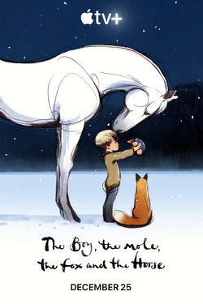
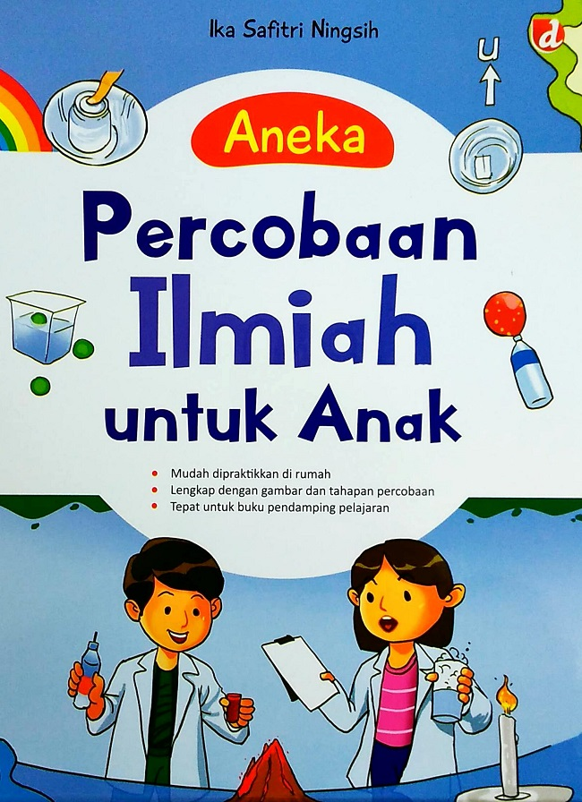

Bedah Buku: Negeri 5 Menara
Ditulis oleh: Ahmad Fuadi

Buku ini menceritakan perjalanan hidup Alif, seorang anak Minang yang menempuh pendidikan di pondok pesantren Madani.
Awalnya penuh keraguan, namun perlahan Alif menemukan makna perjuangan, persahabatan, dan kekuatan impian.
“Man Jadda Wajada – Siapa yang bersungguh-sungguh, dia akan berhasil.”
Kalimat itu menjadi semangat utama dalam buku ini. Kisah yang ditulis berdasarkan pengalaman nyata ini sangat menginspirasi,
terutama bagi pelajar yang sedang mengejar mimpi mereka. Penulis berhasil menyampaikan pesan-pesan moral melalui narasi yang hidup.
Buku ini cocok dibaca oleh remaja dan orang dewasa yang sedang mencari motivasi hidup. Cerita persahabatan, perjuangan, dan cinta belajar
membuatnya menyentuh dan relevan bagi pembaca di berbagai usia.
Bedah Buku: The Little Prince
Ditulis oleh: Antoine de Saint-Exupéry

The Little Prince karya Antoine de Saint-Exupéry adalah novella filosofis tentang seorang pilot yang terdampar di Gurun Sahara dan bertemu dengan seorang pangeran muda dari planet lain. Sang pangeran berbagi cerita tentang perjalanannya melintasi kosmos, bertemu dengan orang dewasa yang eksentrik, dan cintanya pada mawar istimewa, mengajarkan sang pilot tentang cinta, persahabatan, dan melihat dengan hati.
"Hanya dengan hati seseorang dapat melihat dengan benar; apa yang esensial tidak terlihat oleh mata"
Kalimat itu menjadi semangat utama dalam buku ini. Kisah yang ditulis berdasarkan pengalaman nyata ini sangat menginspirasi,
terutama bagi pelajar yang sedang mengejar mimpi mereka. Penulis berhasil menyampaikan pesan-pesan moral melalui narasi yang hidup.
buku fiksi yang filosofis ini cocok dibaca oleh semua umur, mulai dari anak-anak, remaja, hingga dewasa. Meskipun berbentuk dongeng, buku ini menyajikan pesan mendalam tentang kehidupan, persahabatan, cinta, dan kehilangan yang sering dilupakan oleh orang dewasa.
Bedah Buku: The Boy, The Mole, The Fox, and The Horse.
Ditulis oleh: Charlie Mackesy

The Boy, the Mole, the Fox and the Horse karya Charlie Mackesy adalah fabel modern tentang persahabatan, cinta, dan keberanian antara seorang anak laki-laki kesepian dan tiga hewan (tikus tanah, rubah, kuda). Melalui ilustrasi indah dan percakapan sederhana, mereka menjelajahi kehidupan, mengajarkan penerimaan diri, kebaikan hati, dan kekuatan untuk terus maju.
"Selalu ingat bahwa kamu berarti, kamu penting, dan kamu dicintai." — Mole
Kutipan ini menegaskan tema utama buku: setiap orang memiliki nilai, peran, dan cinta yang unik dalam hidup ini.
Buku Iqra'
Ditulis oleh: As'ad Humam

Buku Iqro : Cara cepat membaca Al-Quran adalah buku teks yang digunakan komunitas Muslim di Indonesia dan Malaysia untuk belajar membaca huruf-huruf Arab dan melafalkan bahasa tersebut. Buku ini disusun oleh As'ad Humam bersama "Team Tadarus AMM" dan diterbitkan pada awal 1990-an. Iqro ditujukan sebagai batu loncatan awal untuk dapat membaca Al-Quran dalam bahasa aslinya serta keterampilan dalam membaca Al-Quran atau tajwid dan makhorijul huruf.
Buku Iqro' : cara cepat belajar membaca Al-Qur'an
Iqro biasanya dipelajari oleh anak-anak TK sampai awal sekolah dasar, dan sering digunakan di sekolah khusus pembacaan Al-Quran, TPQ, pesantren, surau, dan sekolah rumah (homeschooling) sebagai buku penunjang pendidikan agama.
Bedah Buku: Curiosity
Ditulis oleh: Ahmad Fuadi

Rasa ingin tahu adalah karakter baik penting yang proses pembentukannya memerlukan waktu dan dukungan lingkungan, sehingga penting untuk dimulai sejak dini.Panduan Aybun menanamkan keberanian dan karakter baik pada anak usia 4+. Hadir dalam dwibahasa (Indonesia-Inggris) untuk stimulasi dua bahasa sejak dini.
“Rasa ingin tahu membuka pintu pengetahuan dan petualangan.”
menegaskan bahwa setiap pembelajaran berawal dari keberanian untuk bertanya dan mencoba. Dengan rasa penasaran, anak terdorong mengeksplorasi dunia, menemukan hal baru, dan mengubah hal-hal sederhana menjadi pengalaman yang penuh makna. Curiosity bukan sekadar ingin tahu, tapi kunci yang menyalakan proses belajar dan penemuan.
Buku ini cocok dibaca oleh anak-anak untuk melatih rasa penasaran mereka
Bedah Buku: Matematika
Ditulis oleh: Kemendikbud

Rasa ingin tahu adalah karakter baik penting yang proses pembentukannya memerlukan waktu dan dukungan lingkungan, sehingga penting untuk dimulai sejak dini.Panduan buku matematika memadukan berfikir logis dan logika baik pada anak usia 4+. Hadir dalam dwibahasa (Indonesia-Inggris) untuk stimulasi dua bahasa sejak dini.
“perbanyak W dan kurangi F.”
quotes itu bikib semangat belajar mtk
Buku ini cocok dibaca oleh anak-anak yang mau belajar mtk tpi bingung mau mulai darimana
Bedah Buku: Anak Hebat
Ditulis oleh: Neuvilette

Anak perlu pendidikan yang baik untuk menjadi pribadi yang membanggakan, buku ini dapat memenuhi pendidikan karakter anak agar menjadi anak hebat.
“Ayo jadi anak hebat.”
Ajakan yang powerful agar anak pengen jadi anak hebat.
Buku ini cocok dibaca oleh anak-anak untuk melatih rasa penasaran mereka
Bedah Buku: Anak Hebat
Ditulis oleh: Tentang Anak

Beranjak umur 5 tahun, anak perlu belajar kemandirian dalam membuang hajat sendiri. maka buku ini dapat melangkah kedepan dan membantu anak-anak untuk belajar caranya dengan mandiri
“Ayo belajar ke toilet sendiri.”
Ajakan yang powerful agar anak pengen belajar ke toilet sendiri.
Buku ini cocok dibaca oleh anak-anak untuk melatih skill mereka di kamar mandi
Bedah Buku: Atomic Habits
Ditulis oleh: James Clear

"Membangun kebiasaan yang baik dan memutus kebiasaan yang buruk merupakan hal yang susah dan perlu kemampuan dan keinginan bulat untuk berhasil, terutama untuk anak anak. maka dengan buku ini, anak anak dapat belajar cara untuk mengadopsi kebiasaan-kebiasaan positif dan meninggalkan kebiasaan kebiasaan buruk"
“ Setiap tindakan yang Anda ambil adalah suara untuk orang yang ingin Anda jadikan diri Anda ""
Quotes ini sangat mendorong pembaca untuk senantiasa berfikir sebelum melakukan tindakan.
Buku ini cocok dibaca oleh anak-anak untuk melatih kemampuan untuk membangun kebiasaan
Bedah Buku: Eksperimen buat anak
Ditulis oleh: Ika Safitri Ningsih

Anak perlu pendidikan yang baik untuk menjadi pribadi yang membanggakan, buku ini dapat memenuhi pendidikan karakter anak agar menjadi anak hebat.
“Chemistry adalah Chem-is-try"
Ajakan yang powerful agar anak pengen eksperimen keren
Buku ini cocok dibaca oleh anak-anak untuk melatih rasa penasaran mereka
← Kembali ke Katalog